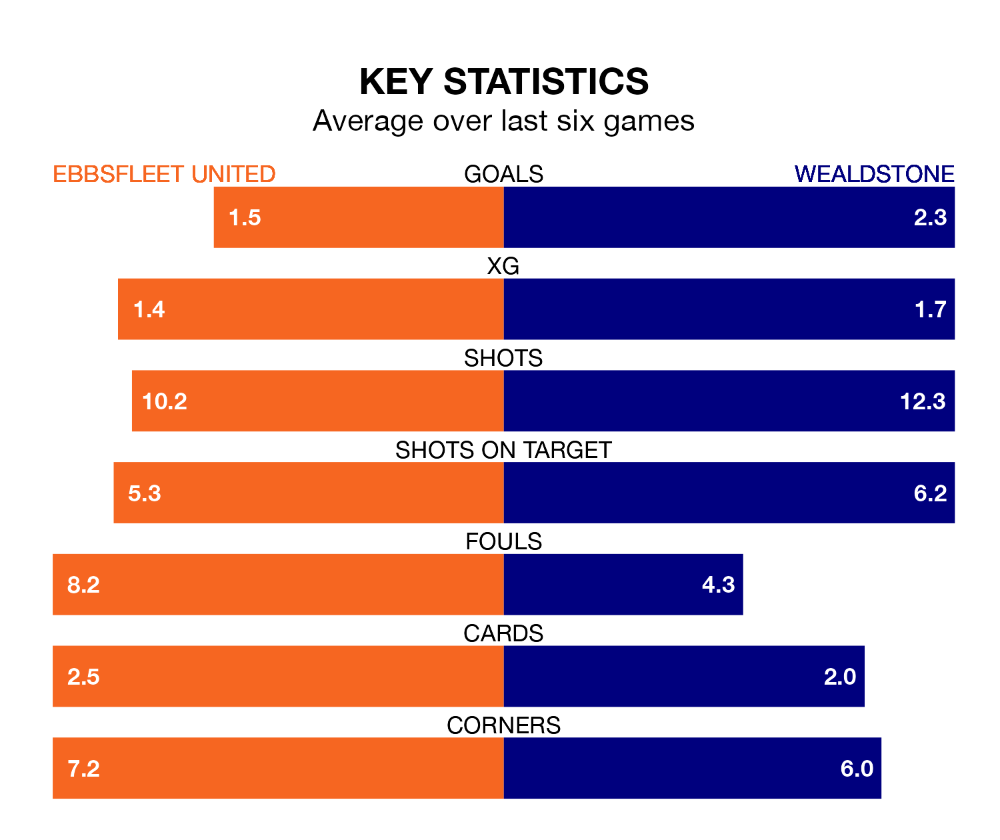

Ebbsfleet United face Wealdstone at the Kuflink Stadium on Saturday looking to secure a first win in six National League games.
Ebbsfleet have lost three and drawn two matches since they last earned three points – against Oldham Athletic on November 25.
They face a Wealdstone side who have won three and drawn one over that time.
Ebbsfleet are 22nd in the table after 27 games, of which they have won six and drawn six, earning 24 points.
Wealdstone are nine places ahead of United in 13th, with nine wins and six draws putting them on 33 points.
With 35 goals in 27 games so far this season, the hosts are scoring at below the league average rate with 1.3 goals per game. And they are conceding more than average, letting in 54 goals at a rate of 2.0 per game.
The away side are also below average scorers, with 1.4 goals per game, compared to a league average of 1.5. They have also conceded 1.4 goals per game.
In Dominic Alfred Poleon, Ebbsfleet have one of the league's most on-form strikers so far this season. He has notched 12 goals in 20 appearances, to sit seventh in the scoring charts.
His goal rate of one every 143 minutes is slightly quicker than that of Olufela Olomola, Wealdstone's top scorer with a goal every 129 minutes, and a total of nine goals in 20 games.
Ebbsfleet's last match was on December 30, a 5-1 loss against Bromley, with Luke O'Neill getting the goal for Ebbsfleet.
Wealdstone beat Maidenhead United 2-0 last time out, on December 26, with Max Kretzschmar and Sean Jordon Adarkwa on the scoresheet.
Updated: 12:57, 02/01/24